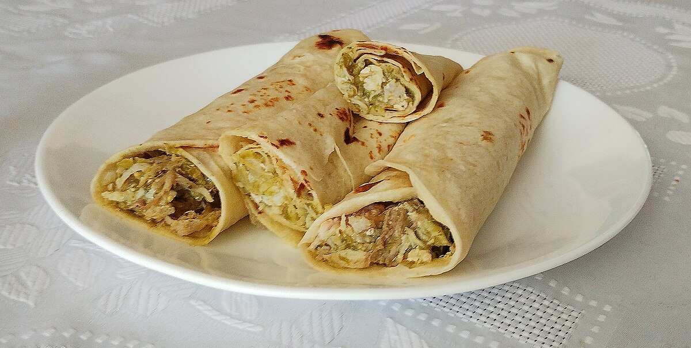

Inicio
Warrito

Descripcion:
"Warrito" es el burrito clasico de Warangaron, cena clasica para los dias que no sabe que comer.
Una receta muy facil y deliciosa
Ingredientes:
- Rapiditas (grandes o medianas, dependiendo que longitud desees)
- 1 cebolla
- Manteca (25grs)
- Pollo o carne (1 pechuga o 1 pedazo de carne a eleccion)
- Condimentos a eleccion (por ejemplo: oregano)
- Jamon y queso (2 fetas por rapidita aprox)
- Primero haremos la cebolla caramelizada, para eso, cortamos la cebolla en cubitos. En una sarten ponemos a derretir la manteca para luego integrar la cebolla y cocinar todo hasta que quede dorada.